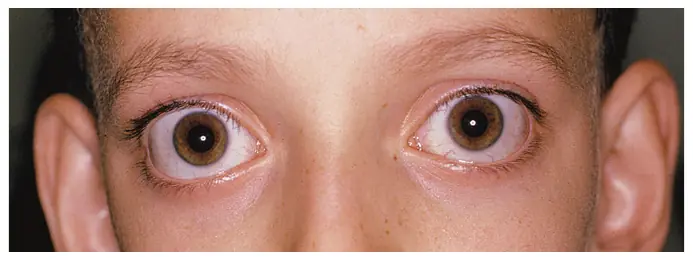

نسخه استخراجشده؛ ترجمه یا تأیید علمی انجام نشده است. وضعیت: captured
خانم ۳۲ سالهای برای درمان ریشه آمده. مدام روی صندلی جابهجا میشود، دستش میلرزد، با وجود کولر عرق کرده و نبضش ۱۱۸ است. میگوید چند ماه است بیدلیل لاغر شده و چشمهایش برجستهتر به نظر میرسد. پیش از بیحسی به چه فکر میکنی؟

تیروئید T4 و T3 میسازد که سرعت متابولیسم بدن را تعیین میکنند. در پرکاری تیروئید (تیروتوکسیکوز) این هورمونها زیادند و بدن تند کار میکند.
در آزمایش، TSH پایین و T4 و T3 بالاست. در کودک مبتلا، افتادن زودرس دندانهای شیری و رویش زودرس دندانهای دائمی شایع است.
بیمار پرکاری که درمان شده و یوتیروئید است (کارکرد تیروئیدش طبیعی است)، بیهیچ تغییری درمان میشود. خطر در بیمار درماننشده یا بد کنترلشده است.
یادآوری: طوفان تیروئیدی نادر است، ولی جان بیمار را تهدید میکند. تب بالا، تعریق و تاکیکاردی شدید در بیمار کنترلنشده یعنی قطع درمان و تماس با ۱۱۵.
نوع سؤال: ساخت کلمه · 5 خانه
حروف منبع: ر · ز · و · ی · گ